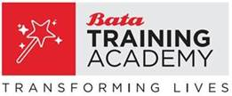

Code of Ethics Acknowledgement
- I have read and understood the Bata Code of Ethics.
- I have no conflict of interest with any company within the Bata India Ltd. and I do not otherwise contravene the Code of Ethics.
- In any situation in which I am uncertain whether I am in a conflict of interest with any company within Bata India Ltd. or if I am uncertain whether I otherwise contravene the Code of Ethics, I will immediately notify my manager or HR about the same.
- I realize that adherence to the Code of Ethics is a condition of my employment.